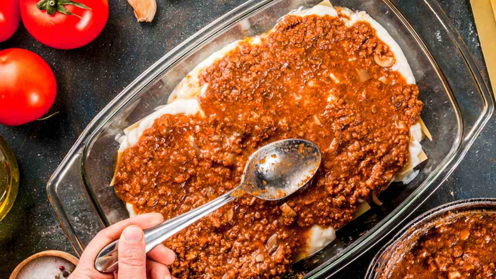

Sobre
This lasagna recipe takes a little work, but it is so satisfying and filling that it's worth it!
When John Chandler submitted this lasagna recipe to Allrecipes more than 20 years ago, he had no idea how successful it would become. One of our top-performing recipes of all time, World's Best Lasagna racks up more than 7 million views per year and has ranked among the most popular lasagna recipes on the internet for two decades. Unfortunately, John unexpectedly passed away at 53 years old — read all about his life and legacy here.
Make our most popular lasagna today to find out what all the fuss is about!
Lasagna Ingredients
Meat:
This super meaty lasagna has sweet Italian sausage and lean ground beef.
Onion and garlic:
An onion and two cloves of garlic are cooked with the meat to add tons of flavor.
Tomato products:
You'll need a can of crushed tomatoes, two cans of tomato sauce, and two cans of tomato paste.
Sugar:
Two tablespoons of white sugar add subtle sweetness and enhance the flavor of the sauce.
Spices and seasonings:
This lasagna recipe is flavored with fresh parsley, dried basil leaves, salt, Italian seasoning, fennel seeds, and black pepper.
Lasagna noodles:
Use store-bought or homemade lasagna noodles.
Cheeses:
Parmesan, mozzarella, and ricotta cheese make this lasagna extra decadent.
Egg:
An egg helps bind the ricotta so it doesn't ooze out of the lasagna when you cut into it.

Step-by-step
Here's a very brief overview of what you can expect when you make homemade lasagna:
- Make the meat sauce.
- Cook the noodles.
- Make the ricotta mixture.
- Layer the lasagna according to the recipe instructions.
- Cover with foil and bake.
- Let the lasagna rest before serving.